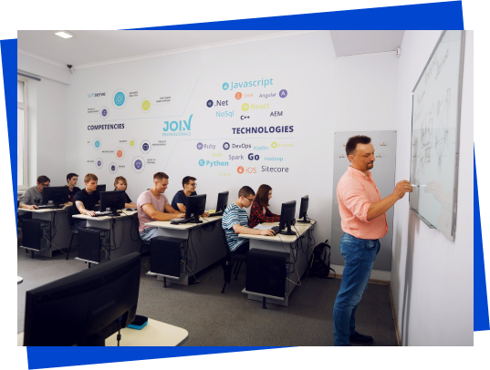
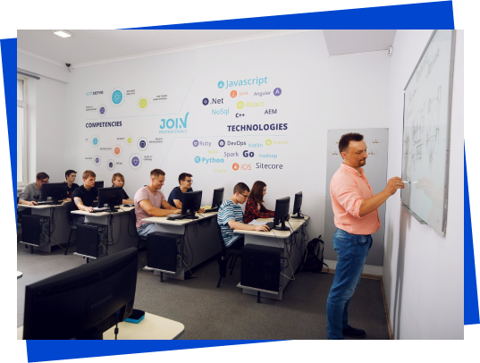

Luxoft
Luxoft - глобальна технологічна компанія, одна із лідерів на ринку послуг цифрової трансформації та створення програмних продуктів Luxoft пропонує індивідуальні IТ-рішення, які заохочують до змін у бізнесах клієнтів в усьому світі.
Luxoft об'єднує понад 13 000 спеціалістів із 22 країн світу зі штаб-квартирою у м. Цуг, Швейцарія. Україна є однією з найпотужніших локацій в географії Luxoft. Близько 3500 фахівців усіх ключових напрямків зосереджені в офісах Києва, Одеси і Дніпра.